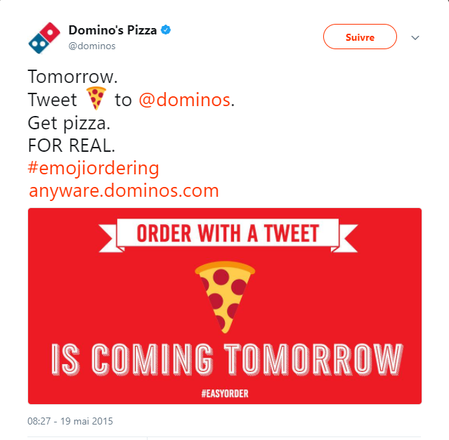

Comprendre les Z
Génération adolescente
La génération Z est avant tout une jeune génération caractérisée par de nombreux éléments que l’on retrouve dans toute génération de l'adolescence.
Les sociologues considèrent l’adolescence comme une catégorie sociale à part entière partageant des codes souvent en rupture avec la génération précédente. Il s’agit du moment où l’individu construit son identité.
L’adolescent prend de plus en plus de place dans le marketing et la communication. Le nombre d’entreprises ciblant directement les adolescents a explosé ces dernières années. Les moyens mis en place pour atteindre ces jeunes clients sont variés.
- la création d’une marque dédiée
- l’aménagement merchandising des boutiques off ou en ligne
- des campagnes de publicités reprenant leurs codes et leurs langages
L’adolescence est une période assez contradictoire. Elle est la jointure entre l’insouciance de l’enfance et la prise de décision de la vie d’adulte.
La recherche d’autonomie est très présente. Elle passe par l’affirmation des goûts et des choix. L’adolescent cherche à se détacher de la cellule familiale et du reste de ses pairs.
Cette période est propice aux tests. Affirmer ses choix passe automatiquement par des doutes et des changements de direction, ce qui peut paraître comme un manque de fidélité ou de cohérence.
En simultané, l’adolescent cherche à être rassuré par la sphère familiale et amicale. Il sera influencé par ses pairs et ses modèles.
Il existe une réelle pression des pairs sur la consommation des Z. La dimension sociale de l’achat est très marquée.
Les Z cherchent également la réassurance des aînés et des traditions. Cela peut être une approche pour les marques.
Première génération mondiale
Les générations Y et Z sont les premières à avoir grandi en lien permanent avec plusieurs cultures. Les avancées technologiques ont créé une génération mondiale qui partage parfois plus de points communs malgré les différences culturelles qu’avec leurs propres aînés. Les enfants du numérique communiquent grâce à un langage commun, interconnecté à l’échelle de la planète.
Ils sont les premiers à prendre pour acquis les programmes d’échange Erasmus. Cette facilité d’aller étudier à l’étranger change la manière de percevoir les distances et le monde.
Les avancées technologiques liées à l’industrie du transport ont également un impact sur le comportement de cette nouvelle génération. L’avion low cost, les lignes à grande vitesse qui se multiplient permettent à des personnes de plus en plus jeunes d'accéder à de nouvelles cultures.
L’accès aux films et séries étrangères, les chaines youtubes ou vidéos en tout genre atténuent les frontières culturelles. Les références culturelles qui façonnent cette génération dépassent les frontières.
La technologie ira encore plus loin dans ce sens avec la création de traductions instantanées permettant de communiquer dans plusieurs langues sans la moindre connaissance.
Les plateformes internationales comme Netflix ou Itunes facilitent l’accès aux programmes étrangers. Une culture mondiale existe. Les Z passent sans problème d’une série américaine à un film espagnol. Les programmes sportifs nationaux peuvent également être suivis dans le monde entier. La popularité des championnats américains de basket repose sur l’accessibilité de ces contenus.
Les Z sont habitués à ce large choix de contenus culturels, artistiques, sportifs. Ils savent où trouver l’information en direct ou par des moyens détournés demandant quelques connaissances techniques sur le web.
Génération instantanée
Une des caractéristiques de cette nouvelle génération est le rapport avec le temps et l’attente.
De nombreux sociologues parle d’un culte de l’immédiateté et de l’instantanéité. Également appelé le "présentisme", cette notion du temps est liée à la rapidité des évolutions en particulier les évolutions technologiques.
Cette nouvelle génération n’a connu qu’un monde qui se transforme à la vitesse grand V. Ils sont stimulés par ces changements rapides. Ces évolutions sont vitales pour eux. Le fast food, le fast fashion, les nouvelles applications, les réseaux sociaux éphémères sont des tendances qui résument assez bien les nouveaux usages de cette génération. Certains leaders du E commerce ont très bien compris cette tendance et proposent des livraisons en 24h. L’ère de la gratification instantanée nécessite l’ajustement d’industries entières. L’exemple du cinéma est très parlant. Les consommateurs ne sont plus prêts à attendre plusieurs années avant d’avoir un film chez eux. Le succès de Netflix aux Etats Unis puis en France le prouve.
La connaissance est également touchée par cette culture de l’immédiateté. "Le savoir au bout du clic" .Les jeunes sont habitués à connaître la réponse à une interrogation en quelques secondes voir minutes. Le succès du site wikipédia, malgré son design très sommaire et le peu d’évolution, est en partie dû à cette instantanéité.
Il est important que les annonceurs prennent en compte cette notion de temps lorsqu’ils s’adressent aux Z . De récentes études estiment à 8 secondes le temps d’attention, contre 12 secondes pour les Millennials. Les jeunes se montrant rapidement ennuyés, les marques doivent faire preuve d’innovation et d’ingéniosité pour réussir à faire passer leur message malgré ce temps d’attention très limité.
Les réseaux sociaux sont très souvent la clé de la réussite. Leurs fonctionnements répondent aux usages et pratiques des Z : partage d’émotions visuelles furtives, instantanées, informations libres d’accès pour tous, liées à une communauté, partageable, privée ou publique mais surtout rapide. Lorsque les marques utilisent les réseaux sociaux pour atteindre une cible Z, elles doivent être prêtes à répondre aux attentes liés aux réseaux.
L’échange avec la marque, la rapidité de réponse, l’authenticité … autant de caractéristiques à prendre en compte. Nous aborderons en détail ces pratiques dans la partie Réseaux sociaux.
Les entreprises doivent concevoir des campagnes compréhensibles ou interpellantes instantanément.
Les zappeurs, voilà un autre terme souvent employé pour définir cette génération. Le nombre de points de contacts est constamment en augmentation. Les Z sont en permanence sollicités via le monde réel et virtuel.
L’instantanéité d’un message, d’une information, d’une réponse nécessite d'arrêter ce qu’on faisait pour répondre à cette nouvelle sollicitation. Le cerveau de cette génération est impacté par les nouveaux usages. "La génération Z, qui a grandi avec les jeux vidéo et les téléphones portables, a gagné des aptitudes cérébrales de vitesse et d’automatismes, au détriment du raisonnement et du self-control"
Génération mature
Cette génération n’est pas en totale opposition avec les précédentes. Elle accepte d’être guidée et éduquée et a conscience de l’importance des aînés. Cependant cette génération pense pouvoir apporter beaucoup de connaissances à leur tour. La génération Z a un fort désir de création et d’entreprenariat. La relation n’est plus latéral et la notion de hiérarchie n’est plus si forte. La relation est abordée avec un sentiment d’égalité.
La société actuelle est faite de nombreux codes créés par les nouvelles générations. Internet a amplifié ce phénomène en donnant la parole à la nouvelle génération.
La génération Z a un fort désir de création et d’entreprenariat. Il se fait davantage confiance pour son avenir professionnel que de la part des grandes entreprises.
Le phénomène des blogs, des comptes Youtubes ..montre la volonté des Z de participer à la création de contenu, et de ne pas être simple spectateur.
Pourquoi ne pas faire confiance aux Z en collaborant avec eux ?
Les inclure dans le processus de développement des nouveaux produits ou communication dont ils seront la cible ? Cela peut passer par des études menées auprès de ces populations, des concours, des sessions de travail avec des écoles …
L’adolescent Z a accès à beaucoup d’informations très rapidement. Il est en mesure de vérifier la véracité d’une information, il a tous les outils nécessaires. Pourtant la multiplication des informations et la rapidité de diffusion favorisent les fakes news. Le manque de recul dans le traitement de l’information est une réelle problématique pour cette nouvelle génération qui ne voit pas forcément la différence entre une informations de fond et un tweet à vif. Il est primordial d’instaurer une relation de confiance et de vérité avec eux. Une information cachée ou détournée peuvent causer beaucoup de tort à une marque.
Les Z souhaitent être considérés comme indépendants et maître de leur décisions. Ils n’aiment pas être infantilisés.
Génération communauté
Communauté de consommateurs
Les adolescents Z sont nés dans un monde commercial ultra connecté. Ils maîtrisent les codes des promotions et de la communication. La maîtrise des réseaux sociaux et d’internet leur donne un nouveau niveau de connaissance et de pouvoir. Les entreprises doivent prendre en compte ces éléments s'ils souhaitent cibler efficacement les Z.
Les Z ayant de plus en plus jeunes accès à des zones commerçantes, un phénomène d’achat en groupe s’est développé. Le "shopping en groupe" consiste à aller faire du repérage grâce au consentement et l’avis de son groupe d’amis. La communauté a beaucoup d’importance dans l’acte d’achat des Z, ce qui le rend plus complexe.
Cela signifie également que les magasins ou sites E commerce doivent s’adapter à cette pratique et aménager l’expérience client pour plusieurs acheteurs et prescripteurs potentiels. Des boutiques ont par exemple mis en place des cabines d’essayage pour plusieurs personnes.
Les programmes de fidélité sont un aspect très important dans la relation client.
Nous avons vu l’importance des pairs et du groupe pour la génération Z. Nous avons également abordé le besoin d'instantanéité et de nouvelles technologies. Ces caractéristiques expliquent très facilement pourquoi les systèmes de fidélisation actuels ne séduisent pas les Z.
D’après l'étude de DiaMart Consulting, peu d'enseignes ont un programme de fidélité omnicanal. Le premier manquement concerne le mobile "1 enseigne sur 3 ne propose pas d’application mobile, 1 enseigne sur 3 ne permet ni de cumuler, ni d’utiliser sa récompense sur son site marchand." (LSA)
Le système actuel récompense la fidélité individuelle et ne prend pas souvent en compte la recommandation de pairs ou l’achat en groupe. Le deuxième point bloquant est la récompense en différée. Le Z n’a pas envie d’attendre 10 passages en caisse pour se sentir privilégié.
Le succès des applications telles que Uber est en grande partie basé sur un système de récompense/parrainage. Le parrain et le filleul sont gratifiés d’une réduction immédiate et significative dès le premier trajet effectué. Ce système permet de gratifier doublement le parrain. Le parrain gagne en générosité auprès de ses amis et ses amis bénéficient de ce "bon plan" avant de devenir à leur tour parrain.
On peut imaginer des systèmes de fidélité encore plus en adéquation avec les usages des Z. Une carte de fidélité unique pour un groupe d’amis permettrait par exemple de fidéliser un ensemble de consommateurs. Le Z étant fidèle à son groupe d’amis il sera plus facilement fidéliser via une action de ses pairs.
Attention toutefois à ne pas oublier de gratifier différemment l’individu à l’origine de la fidélité du groupe afin d'inciter les autres membres à créer un autre "groupe de fidélité"
Le rapport à la propriété est modifiée. La propriété d’usage prévaut sur la propriété d’un bien. Le succès de l’économie partagée repose sur des valeurs de partage et de confiance.
En témoigne le succès de drivy : www.mbamci.com/autopartage-entre-particuliers-start-up-drivy
La confiance et la transparence des communautés virtuelles
Les Z font confiance à leur communauté réelle ainsi que leur communauté virtuelle.
Les réseaux sociaux ont un fort impact sur la prise de décision et la consommation.
Une récente étude menée par "Retaildrive" met en lumière l’importance des réseaux sociaux dans la prise de décision et l’acte d’achat des générations Z.
Cette étude montre notamment la disparité entre cette génération et les précédentes. "80% de la génération Z déclarent être influencés par ces plateformes". Les réseaux sociaux les plus impactant sont Snapchat, YouTube et particulièrement Instagram. Près de "44% des acheteurs Z ont déclaré qu'Instagram avait un impact sur leur décision d'achat", puis vient YouTube en seconde position avec plus de 32% et Snap avec 20%.(Etude Retaildrive) Chez la génération précédente, ces chiffres sont divisés de plus de moitié avec seulement 20% pour Instagram, 10% pour Snap. Youtube se démarque quelque peu avec 22%.
La confiance va plus loin avec l'émergence de nouveaux outils numériques permettent d’élargir cette confiance en dehors du premier cercle. La blockchain est très étudiée depuis quelques années et ne cesse de se développer.
Rapide, simple et gratuite, la blockchain repose sur la transparence et traçabilité des échanges. Les "membres" de la blockchain peuvent consulter l’ensemble des échanges, présents et passés s’ils possèdent les accès à cette blockchain.
Une des caractéristiques importantes de la blockchain est l'absence de tiers pour contrôler les échanges. Il s’agit de réels échanges de pair-à-pair contrôlés par les membres de la blockchain eux mêmes.
Cette simplification des démarches et la transparence qu’elle impose rentre en accord total avec les attentes et le comportement des Z.
L’autonomie extrêmement recherchée et valorisée par les Gen Z viennent s’ajouter à la confiance de la communauté. La blockchain nécessite la maîtrise des nouvelles technologies mais également une grande confiance en Internet.
La blockchain représente également une opportunité pour les Z et le financement participatif. Le nombre de futurs entrepreneurs continue d’augmenter.
La communauté et les problématiques sociétales
Le narcissisme et l’individualisme sont souvent mis en avant lorsque l’on parle de cette génération. Elle est également très impliquée et engagée, notamment dans les problèmes de société. C’est une génération engagée et en quête de sens.
Une partie de cette génération utilise leurs connaissances et leur pouvoir d’influence sur les réseaux afin de faire évoluer la société et rendre le monde plus écologique ou solidaire.
Les Z sont considérés socialement conscients et ce très jeune. Ils ont été élevés avec les campagnes pour favoriser le recyclage, la préservation des lieux naturels, la préservation de la biodiversité, le réchauffement climatique. Grâce à cette éducation, ces sujets ont une réelle importance pour les Z. 92% déclarent se soucier des questions sociétales et environnementales. Les Z sont positifs et pensent avoir un réel impact sur la société.
Il faut donner aux Z le sentiment que son action a un impact positif ou qu’il fait partie d'une cause importante. Les Z ont grandi avec des pratiques comme le "greenwashing"(campagnes institutionnelles de grands groupes axées sur les valeurs sociales de l’entreprises mais qui en réalité ne sont que des outils de communication). Ils attendent des entreprises des solutions concrètes pour résoudre les problèmes notamment environnementaux ; 94% d'entre eux pensent que les entreprises doivent jouer un rôle significatif dans l’amélioration de la société.
Mettre en avant un engagement sociétal fonctionne très bien auprès de la génération Z, à condition que cet engagement soit réel. Les Z cherchent davantage à soutenir les entreprises en adéquation avec leurs valeurs qu'à sanctionner celles qui ne le sont pas. Les Z considèrent la consommation comme un élément de leur personnalité, de l’image qu’il souhaite renvoyer à leur entourage. Lorsqu’ils font confiance à une marque pour ses valeurs et qu’ils se sentent trahis ou trompés par elle, les Z peuvent devenir extrêmement virulents. Leur pouvoir de nuisance sur les réseaux sociaux n’est pas négligeable. Une étude menée par Cône Communication montre que 80% des Z pensent pouvoir changer les choses grâce à leur influence sur les réseaux sociaux. Les millennials ont également ces attentes, mais la manière d’agir est différente. Les Y mèneront des actions de communication pour faire changer une entreprise en passant par la confrontation, la mise en place de boycotts. Le 28 novembre 2017 des youtubeurs et célébrités ont lancé une mobilisation générale appelée #LoveArmyForRohingya, touchant en grande partie les Z grâce aux réseaux sociaux. De nombreuses marques ont été sollicitées par les Z pour participer à cet appel et venir en aide à cette minorité persécutée.
Les "Bad buzz" peuvent rapidement détruire plusieurs années de communication auprès des Z et Y. Les marques doivent se demander si leurs campagnes de communication montrent qu’ils ont un impact positif sur la société. Et si les actions menées sont à la hauteur des attentes des consommateurs Z.
Génération de l’apparence
Ils ont grandi avec la télé réalité, la famille Kardashian, les réseaux sociaux, une société basée sur l’image. Les premières émissions de téléréalité comme loft story sont bien loin, la première émission du loft a été diffusée en avril 2001.
Il y a l’image renvoyée à son entourage puis l’image renvoyée à la communauté réelle ou virtuelle, et en dernier l’image renvoyée à la société.
Les pratiques sociales évoluent en même temps que les nouveaux moyens de communication, certaines sont amplifiées d’autres atténuées.
Identification sociale
L’activité sur les réseaux sociaux est un point commun qui rassemble ou divise les Z. La présence sur un réseau plutôt qu’un autre, le niveau d’implication est souvent commune au groupe. Le type de contenu partagé, la quantité, la fréquence sont autant d’éléments pris en compte dans un groupe identifié.
Un élément très différenciant est la véracité du contenu publié : la personne est elle authentique ou cherche -t- elle à enjoliver la réalité ?
Ces critères d’identification sont à nouveau facilement transposables à d’autres générations.
"J’achète donc je suis"
Quelque soit la génération, les hommes se regroupent selon les goûts, les milieux sociaux et les modes de consommation. Les biens et possessions sont souvent considérés comme des aspects de reconnaissance sociale. "J’achète donc je suis", le type de voiture, le style vestimentaire, le régime alimentaire… la consommation est très facilement associable à une catégorie de la population ou un sous groupe identifié.
Ces éléments d’appartenance à un groupe se retrouvent chez les Z. Ils ont accès de plus en plus jeunes à des moyens de paiement ou des lieux d’achat. Cet acte d’identification sociale plus ou moins consciente est assumée selon l’âge. Les individus renvoient une image différente à leur entourage selon leurs achats.
"Je poste donc je suis"
L’adage "j’achète donc je suis" ne suffit plus car il est impossible d’impliquer sa communauté virtuelle en achetant. Une des façons de les intégrer est de poster l’achat sur les réseaux.
La communauté virtuelle est une des plus large chez les Z. Les réseaux sociaux se sont transformés en showroom virtuel ou les Z exposent leurs achats afin d’affirmer leur personnalité et leur appartenance à un groupe. Le terme "Je poste donc je suis" est donc approprié pour décrire ce phénomène.
Lorsque les entreprises sont conscientes de ce phénomène, elles n’hésitent pas à transformer leur produit en objet identitaire, lui donnant ainsi de la viralité et de la désirabilité sur les réseaux. Le produit doit être considéré comme différenciant et tendance.
Suscité de la jalousie et l’envie sont des motivations que l’on retrouve souvent sur les réseaux. Ces pratiques ne sont pas nouvelles ni réservées à la génération Z. La dernière voiture, la grande maison, le sac dernier cri, sont des éléments d’appartenance à un groupe et de démarcation. Les codes des anciennes générations ont été ajustés aux nouveaux modes de communication.
"Le poids des emoji, le choc des photos"
Les Z communiquent davantage via des images que par des mots. On retrouve l’utilisation massive d’emoji, GIF, images et vidéos dans la communication des Z.
Pour aller plus loin : Huffingtonpost : Google a modifié son emoji burger et tout le monde est soulagé
Cette pratique est appelée le "snackable"
Cela signifie du contenu court et sans prise de position forte, qui fait appel à la rapidité d'attention de la Génération Z.
Les marques qui ciblent les Z ont adopté ce nouveau mode de communication rapide et visuel.
Exemple Dominos pizza : en 2015 la marque Dominos a fait parler d’elle en lançant une campagne de communication sur les réseaux sociaux autour des Emojis.
L’entreprise a bien compris les nouveaux usages des Z et va plus loin en laissant la possibilité à ses clients de choisir le device et la plateforme pour commander leurs pizzas. Ce service est un très bon moyen de rajeunir une marque. Cette grande liberté de device permet à la marque de toucher les Z quelque soit leurs habitudes sur les réseaux sociaux et de s’inviter sur des réseaux réservés habituellement au cercle proche ou à sa communauté.
Storytelling de soi
Les Gen Z observent et se savent observés sur les réseaux sociaux. Les Z sont très soucieux de leur image. Ils ont le contrôle de l'image comme mot d'ordre. Et contrairement aux Y qui ont découvert à leur insu les dangers des réseaux sociaux les Z sont davantage conscients du poids des réseaux sociaux, de la viralité et la rapidité de la diffusion d’une photo ou d’une capture d’écran. Ils ont également conscience que leurs traces sur internet les suivra une fois adulte.
La fibre entrepreneuriale des Z se retrouve dans l’utilisation des réseaux sociaux. Beaucoup ont développé seuls des compétences en photo, vidéo, montage dans le but d’améliorer leur présence en ligne. C’est un véritable "storytelling de soi" qui est développé. Donner envie, se montrer sous son meilleur profil, entouré des meilleurs amis, le tout en utilisant les codes des réseaux sociaux.
C’est une manière d’affirmer sa personnalité et ses goûts comme pour les précédentes génération, la grande différence est l’audience et la diffusion des informations sur les réseaux sociaux.
Appelés les "cool kids insta" certains Z poussent le "personal brandind"(définition en bas de page) encore plus loin, avec des règles tacites. Comme, par exemple, le nombre de photos maximum à poster sur un compte qui nécessite de supprimer les photos au fur à mesure pour ne laisser que les 45 meilleures photos de la même manière qu’un book de mode.